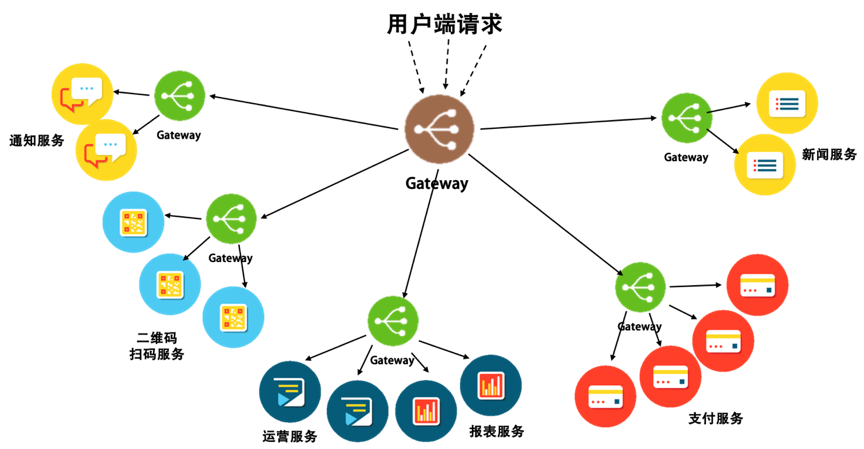

- 000 开篇词 洞悉技术的本质，享受科技的乐趣.md.html
- 001 程序员如何用技术变现（上）.md.html
- 002 程序员如何用技术变现（下）.md.html
- 003 Equifax信息泄露始末.md.html
- 004 从Equifax信息泄露看数据安全.md.html
- 005 何为技术领导力.md.html
- 006 如何拥有技术领导力.md.html
- 007 推荐阅读：每个程序员都该知道的事.md.html
- 008 Go语言，Docker和新技术.md.html
- 009 答疑解惑：渴望、热情和选择.md.html
- 010 如何成为一个大家愿意追随的Leader？.md.html
- 011 程序中的错误处理：错误返回码和异常捕捉.md.html
- 012 程序中的错误处理：异步编程和最佳实践.md.html
- 013 魔数 0x5f3759df.md.html
- 014 推荐阅读：机器学习101.md.html
- 015 时间管理：同扭曲时间的事儿抗争.md.html
- 016 时间管理：投资赚取时间.md.html
- 017 故障处理最佳实践：应对故障.md.html
- 018 故障处理最佳实践：故障改进.md.html
- 019 答疑解惑：我们应该能够识别的表象和本质.md.html
- 020 分布式系统架构的冰与火.md.html
- 021 从亚马逊的实践，谈分布式系统的难点.md.html
- 022 分布式系统的技术栈.md.html
- 023 分布式系统关键技术：全栈监控.md.html
- 024 分布式系统关键技术：服务调度.md.html
- 025 分布式系统关键技术：流量与数据调度.md.html
- 026 洞悉PaaS平台的本质.md.html
- 027 推荐阅读：分布式系统架构经典资料.md.html
- 028 编程范式游记（1）- 起源.md.html
- 029 编程范式游记（2）- 泛型编程.md.html
- 030 编程范式游记（3） - 类型系统和泛型的本质.md.html
- 031 Git协同工作流，你该怎样选.md.html
- 032 推荐阅读：分布式数据调度相关论文.md.html
- 033 编程范式游记（4）- 函数式编程.md.html
- 034 编程范式游记（5）- 修饰器模式.md.html
- 035 编程范式游记（6）- 面向对象编程.md.html
- 036 编程范式游记（7）- 基于原型的编程范式.md.html
- 037 编程范式游记（8）- Go 语言的委托模式.md.html
- 038 编程范式游记（9）- 编程的本质.md.html
- 039 编程范式游记（10）- 逻辑编程范式.md.html
- 040 编程范式游记（11）- 程序世界里的编程范式.md.html
- 041 弹力设计篇之“认识故障和弹力设计”.md.html
- 042 弹力设计篇之“隔离设计”.md.html
- 043 弹力设计篇之“异步通讯设计”.md.html
- 044 弹力设计篇之“幂等性设计”.md.html
- 045 弹力设计篇之“服务的状态”.md.html
- 046 弹力设计篇之“补偿事务”.md.html
- 047 弹力设计篇之“重试设计”.md.html
- 048 弹力设计篇之“熔断设计”.md.html
- 049 弹力设计篇之“限流设计”.md.html
- 050 弹力设计篇之“降级设计”.md.html
- 051 弹力设计篇之“弹力设计总结”.md.html
- 052 区块链技术 - 区块链的革命性及技术概要.md.html
- 053 区块链技术 - 区块链技术细节 - 哈希算法.md.html
- 054 区块链技术 - 区块链技术细节 - 加密和挖矿.md.html
- 055 区块链技术 - 去中心化的共识机制.md.html
- 056 区块链技术 - 智能合约.md.html
- 057 区块链技术 - 传统金融和虚拟货币.md.html
- 058 管理设计篇之分布式锁.md.html
- 059 管理设计篇之配置中心.md.html
- 060 管理设计篇之边车模式.md.html
- 061 管理设计篇之服务网格.md.html
- 062 管理设计篇之网关模式.md.html
- 063 管理设计篇之部署升级策略.md.html
- 064 性能设计篇之缓存.md.html
- 065 性能设计篇之异步处理.md.html
- 066 性能设计篇之数据库扩展.md.html
- 067 性能设计篇之秒杀.md.html
- 068 性能设计篇之边缘计算.md.html
- 069 程序员练级攻略（2018）：开篇词.md.html
- 070 程序员练级攻略（2018）：零基础启蒙.md.html
- 071 程序员练级攻略（2018）：正式入门.md.html
- 072 程序员练级攻略（2018）：程序员修养.md.html
- 073 程序员练级攻略（2018）：编程语言.md.html
- 074 程序员练级攻略：理论学科.md.html
- 075 程序员练级攻略（2018）：系统知识.md.html
- 076 程序员练级攻略（2018）：软件设计.md.html
- 077 程序员练级攻略（2018）：Linux系统、内存和网络.md.html
- 078 程序员练级攻略（2018）：异步IO模型和Lock-Free编程.md.html
- 079 程序员练级攻略（2018）：Java底层知识.md.html
- 080 程序员练级攻略（2018）：数据库.md.html
- 081 程序员练级攻略（2018）：分布式架构入门.md.html
- 082 程序员练级攻略（2018）：分布式架构经典图书和论文.md.html
- 083 程序员练级攻略（2018）：分布式架构工程设计.md.html
- 084 程序员练级攻略（2018）：微服务.md.html
- 085 程序员练级攻略（2018）：容器化和自动化运维.md.html
- 086 程序员练级攻略（2018）：机器学习和人工智能.md.html
- 087 程序员练级攻略（2018）：前端基础和底层原理.md.html
- 088 程序员练级攻略（2018）：前端性能优化和框架.md.html
- 089 程序员练级攻略（2018）：UIUX设计.md.html
- 090 程序员练级攻略（2018）：技术资源集散地.md.html
- 091 程序员面试攻略：面试前的准备.md.html
- 092 程序员面试攻略：面试中的技巧.md.html
- 093 程序员面试攻略：面试风格.md.html
- 094 程序员面试攻略：实力才是王中王.md.html
- 095 高效学习：端正学习态度.md.html
- 096 高效学习：源头、原理和知识地图.md.html
- 097 高效学习：深度，归纳和坚持实践.md.html
- 098 高效学习：如何学习和阅读代码.md.html
- 099 高效学习：面对枯燥和量大的知识.md.html
- 100 高效沟通：Talk和Code同等重要.md.html
- 101 高效沟通：沟通阻碍和应对方法.md.html
- 102 高效沟通：沟通方式及技巧.md.html
- 103 高效沟通：沟通技术.md.html
- 104 高效沟通：好老板要善于提问.md.html
- 105 高效沟通：好好说话的艺术.md.html
- 106 加餐 谈谈我的“三观”.md.html
- 107 结束语 业精于勤，行成于思.md.html
062 管理设计篇之网关模式
前面，我们讲了 Sidecar 和 Service Mesh 这两个设计模式，这两种设计模式都是在不侵入业务逻辑的情况下，把控制面（control plane）和数据面（data plane）的处理解耦分离。但是这两种模式都让我们的运维成本变得特别大，因为每个服务都需要一个 Sidecar，这让本来就复杂的分布式系统的架构就更为复杂和难以管理了。
在谈 Service Mesh 的时候，我们提到了 Gateway。我个人觉得并不需要为每个服务的实例都配置上一个 Sidecar。其实，一个服务集群配上一个 Gateway 就可以了，或是一组类似的服务配置上一个 Gateway。
这样一来，Gateway 方式下的架构，可以细到为每一个服务的实例配置上一个自己的 Gateway，也可以粗到为一组服务配置一个，甚至可以粗到为整个架构配置一个接入的 Gateway。于是，整个系统架构的复杂度就会变得简单可控起来。

这张图展示了一个多层 Gateway 架构，其中有一个总的 Gateway 接入所有的流量，并分发给不同的子系统，还有第二级 Gateway 用于做各个子系统的接入 Gateway。可以看到，网关所管理的服务粒度可粗可细。通过网关，我们可以把分布式架构组织成一个星型架构，由网络对服务的请求进行路由和分发，也可以架构成像 Servcie Mesh 那样的网格架构，或者只是为了适配某些服务的 Sidecar……
但是，我们也可以看到，这样一来，Sidecar 就不再那么轻量了，而且很有可能会变得比较重了。
总的来说，Gateway 是一个服务器，也可以说是进入系统的唯一节点。这跟面向对象设计模式中的 Facade 模式很像。Gateway 封装内部系统的架构，并且提供 API 给各个客户端。它还可能有其他功能，如授权、监控、负载均衡、缓存、熔断、降级、限流、请求分片和管理、静态响应处理，等等。
下面，我们来谈谈一个好的网关应该有哪些设计功能。
网关模式设计
一个网关需要有以下的功能。
- 请求路由。因为不再是 Sidecar 了，所以网关必需要有请求路由的功能。这样一来，对于调用端来说，也是一件非常方便的事情。因为调用端不需要知道自己需要用到的其它服务的地址，全部统一地交给 Gateway 来处理。
- 服务注册。为了能够代理后面的服务，并把请求路由到正确的位置上，网关应该有服务注册功能，也就是后端的服务实例可以把其提供服务的地址注册、取消注册。一般来说，注册也就是注册一些 API 接口。比如，HTTP 的 Restful 请求，可以注册相应的 API 的 URI、方法、HTTP 头。 这样，Gateway 就可以根据接收到的请求中的信息来决定路由到哪一个后端的服务上。
- 负载均衡。因为一个网关可以接多个服务实例，所以网关还需要在各个对等的服务实例上做负载均衡策略。简单的就直接是 round robin 轮询，复杂点的可以设置上权重进行分发，再复杂一点还可以做到 session 粘连。
- 弹力设计。网关还可以把弹力设计中的那些异步、重试、幂等、流控、熔断、监视等都可以实现进去。这样，同样可以像 Service Mesh 那样，让应用服务只关心自己的业务逻辑（或是说数据面上的事）而不是控制逻辑（控制面）。
- 安全方面。SSL 加密及证书管理、Session 验证、授权、数据校验，以及对请求源进行恶意攻击的防范。错误处理越靠前的位置就是越好，所以，网关可以做到一个全站的接入组件来对后端的服务进行保护。
当然，网关还可以做更多的更有趣的事情，比如：
- 灰度发布。网关完全可以做到对相同服务不同版本的实例进行导流，并还可以收集相关的数据。这样对于软件质量的提升，甚至产品试错都有非常积极的意义。
- API 聚合。使用网关可将多个单独请求聚合成一个请求。在微服务体系的架构中，因为服务变小了，所以一个明显的问题是，客户端可能需要多次请求才能得到所有的数据。这样一来，客户端与后端之间的频繁通信会对应用程序的性能和规模产生非常不利的影响。于是，我们可以让网关来帮客户端请求多个后端的服务（有些场景下完全可以并发请求），然后把后端服务的响应结果拼装起来，回传给客户端（当然，这个过程也可以做成异步的，但这需要客户端的配合）。
- API 编排。同样在微服务的架构下，要走完一个完整的业务流程，我们需要调用一系列 API，就像一种工作流一样，这个事完全可以通过网页来编排这个业务流程。我们可能通过一个 DSL 来定义和编排不同的 API，也可以通过像 AWS Lambda 服务那样的方式来串联不同的 API。
Gateway、Sidecar 和 Service Mesh
通过上面的描述，我们可以看到，网关、边车和 Service Mesh 是非常像的三种设计模式，很容易混淆。因此，我在这里想明确一下这三种设计模式的特点、场景和区别。
首先，Sidecar 的方式主要是用来改造已有服务。我们知道，要在一个架构中实施一些架构变更时，需要业务方一起过来进行一些改造。然而业务方的事情比较多，像架构上的变更会低优先级处理，这就导致架构变更的 " 政治复杂度 " 太大。而通过 Sidecar 的方式，我们可以适配应用服务，成为应用服务进出请求的代理。这样，我们就可以干很多对于业务方完全透明的事情了。
当 Sidecar 在架构中越来越多时，需要我们对 Sidecar 进行统一的管理。于是，我们为 Sidecar 增加了一个全局的中心控制器，就出现了我们的 Service Mesh。在中心控制器出现以后，我们发现，可以把非业务功能的东西全部实现在 Sidecar 和 Controller 中，于是就成了一个网格。业务方只需要把服务往这个网格中一放就好了，与其它服务的通讯、服务的弹力等都不用管了，像一个服务的 PaaS 平台。
然而，Service Mesh 的架构和部署太过于复杂，会让我们运维层面上的复杂度变大。为了简化这个架构的复杂度，我认为 Sidecar 的粒度应该是可粗可细的，这样更为方便。但我认为，Gateway 更为适合，而且 Gateway 只负责进入的请求，不像 Sidecar 还需要负责对外的请求。因为 Gateway 可以把一组服务给聚合起来，所以服务对外的请求可以交给对方服务的 Gateway。于是，我们只需要用一个只负责进入请求的 Gateway 来简化需要同时负责进出请求的 Sidecar 的复杂度。
总而言之，我觉得 Gateway 的方式比 Sidecar 和 Service Mesh 更好。当然，具体问题还要具体分析。
网关的设计重点
- 高性能。在技术设计上，网关不应该也不能成为性能的瓶颈。对于高性能，最好使用高性能的编程语言来实现，如 C、C++、Go 和 Java。网关对后端的请求，以及对前端的请求的服务一定要使用异步非阻塞的 I/O 来确保后端延迟不会导致应用程序中出现性能问题。C 和 C++ 可以参看 Linux 下的 epoll 和 Windows 的 I/O Completion Port 的异步 IO 模型，Java 下如 Netty、Vert.x、Spring Reactor 的 NIO 框架。当然，我还是更喜欢 Go 语言的 goroutine 加 channel 玩法。
- 高可用。因为所有的流量或调用经过网关，所以网关必须成为一个高可用的技术组件，它的稳定直接关系到了所有服务的稳定。网关如果没有设计，就会成变一个单点故障。因此，一个好的网关至少要做到以下几点。
- 集群化。网关要成为一个集群，其最好可以自己组成一个集群，并可以自己同步集群数据，而不需要依赖于一个第三方系统来同步数据。
- 服务化。网关还需要做到在不间断的情况下修改配置，一种是像 Nginx reload 配置那样，可以做到不停服务，另一种是最好做到服务化。也就是说，得要有自己的 Admin API 来在运行时修改自己的配置。
- 持续化。比如重启，就是像 Nginx 那样优雅地重启。有一个主管请求分发的主进程。当我们需要重启时，新的请求被分配到新的进程中，而老的进程处理完正在处理的请求后就退出。
- 高扩展。因为网关需要承接所有的业务流量和请求，所以一定会有或多或少的业务逻辑。而我们都知道，业务逻辑是多变和不确定的。比如，需要在网关上加上一些和业务相关的东西。因此，一个好的 Gateway 还需要是可以扩展的，并能进行二次开发的。当然，像 Nginx 那样通过 Module 进行二次开发的固然可以。但我还是觉得应该做成像 AWS Lambda 那样的方式，也就是所谓的 Serverless 或 FaaS（Function as a Service）那样的方式。
- 运维方面。网关应该有以下的设计原则。
- 业务松耦合，协议紧耦合。在业务设计上，网关不应与后面的服务之间形成服务耦合，也不应该有业务逻辑。网关应该是在网络应用层上的组件，不应该处理通讯协议体，只应该解析和处理通讯协议头。另外，除了服务发现外，网关不应该有第三方服务的依赖。
- 应用监视，提供分析数据。网关上需要考虑应用性能的监控，除了有相应后端服务的高可用的统计之外，还需要使用 Tracing ID 实施分布式链路跟踪，并统计好一定时间内每个 API 的吞吐量、响应时间和返回码，以便启动弹力设计中的相应策略。
- 用弹力设计保护后端服务。网关上一定要实现熔断、限流、重试和超时等弹力设计。如果一个或多个服务调用花费的时间过长，那么可接受超时并返回一部分数据，或是返回一个网关里的缓存的上一次成功请求的数据。你可以考虑一下这样的设计。
- DevOps。因为网关这个组件太关键了，所以需要 DevOps 这样的东西，将其发生故障的概率降到最低。这个软件需要经过精良的测试，包括功能和性能的测试，还有浸泡测试。还需要有一系列自动化运维的管控工具。
- 架构方面。有如下一些注意事项。
- 不要在网关中的代码里内置聚合后端服务的功能，而应考虑将聚合服务放在网关核心代码之外。可以使用 Plugin 的方式，也可以放在网关后面形成一个 Serverless 服务。
- 网关应该靠近后端服务，并和后端服务使用同一个内网，这样可以保证网关和后端服务调用的低延迟，并可以减少很多网络上的问题。这里多说一句，网关处理的静态内容应该靠近用户（应该放到 CDN 上），而网关和此时的动态服务应该靠近后端服务。
- 网关也需要做容量扩展，所以需要成为一个集群来分担前端带来的流量。这一点，要么通过 DNS 轮询的方式实现，要么通过 CDN 来做流量调度，或者通过更为底层的性能更高的负载均衡设备。
- 对于服务发现，可以做一个时间不长的缓存，这样不需要每次请求都去查一下相关的服务所在的地方。当然，如果你的系统不复杂，可以考虑把服务发现的功能直接集成进网关中。
- 为网关考虑 bulkhead 设计方式。用不同的网关服务不同的后端服务，或是用不同的网关服务前端不同的客户。
- 安全方面。因为网关成了为用户请求和后端服务的桥接装置，所以需要考虑一些安全上的东西。
- 加密数据。可以把 SSL 相关的证书放到网关上，由网关做统一的 SSL 传输管理。
- 校验用户的请求。一些基本的用户验证可以放在网关上来做，比如用户是否已登录，用户请求中的 token 是否合法等。但是，我们需要权衡一下，网关是否需要校验用户的输入。因为这样一来，网关就需要从只关心协议头，到需要关心协议体。而协议体中的东西一方面不像协议头是标准的，另一方面解析协议体还要耗费大量的运行时间，从而降低网关的性能。对此，我想说的是，看具体需求，一方面如果协议体是标准的，那么可以干；另一方面，对于解析协议所带来的性能问题，需要做相应的隔离。
- 检测异常访问。网关需要检测一些异常访问，比如，在一段比较短的时间内请求次数超过一定数值；还比如，同一客户端的 4xx 请求出错率太高……对于这样的一些请求访问，网关一方面要把这样的请求屏蔽掉，另一方面需要发出警告，有可能会是一些比较重大的安全问题，如被黑客攻击。
小结
好了，我们来总结一下今天分享的主要内容。首先，网关模式能代替边车模式，区别是它将分布在各个服务边上的边车换成了集中式的网关。网关不必管理所有服务节点，而是可以根据需要，为指定的服务集群配上网关，也可以在网关前面加上更高层的网关，从而构造出一个星型的结构。
接着，我列举了网关模式的功能特性。然后，我介绍了网关模式的设计重点。由于网关的功能比较多，因此在设计上要考虑的点也比较多，需要我们仔细思考和斟酌。下篇文章中，我们讲述部署升级策略。希望对你有帮助。
也欢迎你分享一下你接触到的分布式系统有没有用到网关？网关的功能如何？有没有把服务的弹力设计做在里面？